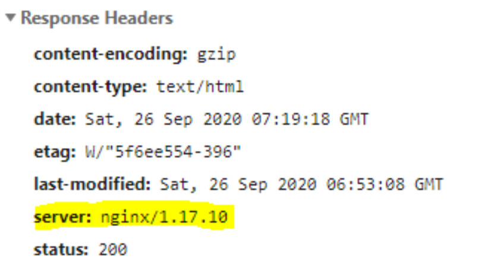
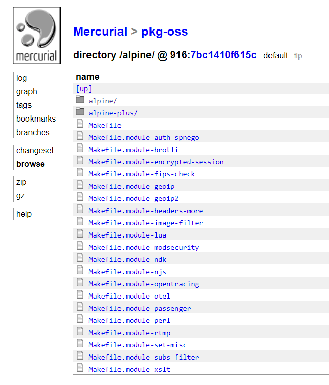

Sommaire
- Ce qui ne fonctionne pas
- Comment on fait alors ?
- La solution
- Comment installer les modules NGINX hors du container NGINX
- Fichier à modifier pour appliquer les modules dans votre NGINX
NGINX, comme tout serveur web, envoie dans ses requêtes et réponse HTTP des en-têtes, des "headers".
Ces en-têtes sont utiles, car ils permettent de pouvoir faire passer des données nécessaires au serveur ainsi qu'au navigateur (Authorization, Content-Security-Policy, Cache-Control…).
Parmi les différents en-têtes envoyés par le serveur en réponse existe l’en-tête “server” qui permet d'identifier le serveur que l'on utilise, dans le cas de NGINX, on reçoit une données sous la forme de nginx/<version>

Maintenant soyons honnête, vous pourriez vous en foutre, et continuer votre vie, grand bien vous fasse, mais vous pourriez aussi vous dire "Merde, j'ai pas envie que de potentiel attaquant sache quel technologie de serveur web j'utilise !"
Si c'est votre cas, alors vous êtes au bon endroit, ici je vous montre comment modifier ou retirer, cet en-tête.
Ce qui ne fonctionne pas
J'ai passé plusieurs jours dessus, je vais donc prendre le temps de passer sur certaines méthodes que j'ai vu être proposées qui ne fonctionnent pas, voir qui sont complètement catastrophiques.
Méthode 1 : installer le package "nginx-extras"
Cette méthode est plutôt simple ; Installer le package nginx-extras, et hop, vous avez un NGINX prêt avec tout plein de packages.
Ça marche, oui, vous aurez un NGINX qui tourne avec des modules, dont "header-more" qui permet de modifier ou supprimer des headers que l'on ne pourrait normalement pas, comme l'en-tête “server”.
Vous aurez cependant une bonne mauvaise surprise quand vous verrez que ce package vous fait une réinstallation complète de NGINX, en vous faisant une réinstallation complète utilisant une version daté... (V1.18, on est à la V1.25)
Méthode 2 : Utiliser la directive "server_tokens off;"
C'est un bon début, cette directive permet de supprimer la version de Nginx dans l’en-tête “Server", cependant il laisse le NGINX dans l'en-tête, next.
Méthode 3 : Utiliser la directive "proxy_pass_header Server;"
Non.
Le nom de la directive implique que l'on passe un l’en-tête dans nos réponses HTTP, pour rappel, on essaie d’éviter de passer l’en-tête “Server”.
D'après la documentation officielle de NGINX :
"Permits passing otherwise disabled header fields from a proxied server to a client.", next !
Méthode 4 : Passer la directive "proxy_pass_header: Server"
L'idée est bonne, on passe un en-tête HTTP "server", pour remplacer celui automatiquement généré par notre serveur web.
Le problème, c'est que dans la pratique ça va rajouter un deuxième en-tête "server"...
Comment fait-on alors ?
Je vais ici expliquer la méthode permettant de pouvoir résoudre notre problème sur une vraiment pré-build / compilé de NGINX (Obtenu via installation du paquet nginx, via une image Docker...)
Cette méthode est tout aussi fonctionnelle pour une version non compilée, mais il me semble qu'il existe une seconde méthode demandant de modifier des fichiers avant la compilation du code, à vos risques et péril si vous l'essayez.
La solution
Le repository Github de NGINX, dans son dossier "modules", fourni deux Dockerfile, une utilisant le gestionnaire de paquet apt (Dockerfile) et une autre utilisant apk (Dockerfile.alpine). Elles permettent de pouvoir installer les modules que l'on veut dans une image NGINX de notre choix.
Laissez moi vous expliquer un peu plus en détails :
Les Dockerfiles vont prendre deux arguments en paramètre :
- NGINX_FROM_IMAGE qui prend le nom d'une image NGINX en paramètre, par exemple : "nginx:1.25" ou “nginxinc/nginx-unprivileged:1.25-alpine”.
- ENABLED_MODULES qui prend en paramètre la liste des modules que l'on veut, par exemple : "headers-more lua passenger perl" si on veut ajouter les modules headers-more, lua, passgenger et perl.
À noter que pas tous les modules sont disponibles, vous trouverez la liste des modules dans les dossiers "debian" ou "alpine" en fonction du Dockerfile utilisé.

En fonction de l'installation de NGINX que l'on veut (Debian / Ubuntu ou Alpine), on va installer le fichier Dockerfile correspondant sur notre machine local.
- Dockerfile pour Ubuntu / Debian / Distro utilisant l’utilitaire de paquet “apt”
- Dockerfile.alpine pour Alpine / Distro utilisant l’utilitaire de paquet “apk”
Pour l'exemple, je vais vous présenter comment ajouter les modules dans un NGINX Alpine, la seule et unique chose qui change entre la version Debian et Alpine et le package manager, dont vous n'avez pas à vous souciez car vous n'aurez pas à modifier les Dockerfiles.
Une fois que l'on à installer le Dockerfile qui correspond à nos besoins, on va lancer cette commande (réaliser les modifications nécessaire à vos besoins) :
docker build -f Dockerfile --build-arg ENABLED_MODULES="headers-more" --build-arg NGINX_FROM_IMAGE="nginx:1.25-alpine" -t my-nginx-with-headers-more /path/to/DockerfileExplication de la commande :
- docker build
- -f Dockerfile : On précise le nom du fichier Dockerfile qu'il doit utiliser, Dockerfile, Dockerfile.alpine ou un autre nom si vous l'avez modifiez.
- --build-arg ENABLED_MODULES="headers-more" : On lui dit les modules que l'on veut, ici on installe uniquement headers-more
- --build-arg NGINX_FROM_IMAGE="nginx:1.25-alpine" : Argument optionnel, On lui dit l’image NGINX à utilisé, si on ne saisie pas cette argument, alors il utilisera nginx:mainline ou nginx:mainline-alpine en fonction du Dockerfile utilisé
- -t my-nginx-with-headers-more : Nom donné à l’image que l’on va créer (le NGINX avec les modules)
- /path/to/Dockerfile : Chemin vers le Dockerfile
Exécuter la commande, et à la fin vous aurez une belle image NGINX dans la version voulue avec vos modules.
Note : Si vous utilisez une image nginx-unpriviliged, vous aurez besoin de modifier le Dockerfile pour passer en utilisateur root (USER root) le temps de l'installation des packages
Vous avez désormais un NGINX presque fonctionnelle, avec le module “headers-more” permettant de pouvoir modifier / supprimer l’en-tête “Server”
Il vous suffit d’ajouter deux lignes dans le fichier /etc/nginx/nginx.conf de votre container pour qu’il supprime l’en-tête.
Mais attendez, j’y reviendrai juste après ! Et pourquoi pas maintenant, certains d’entre vous pourraient se demander ?
Car certaines personnes voudraient peut-être pouvoir installer leurs modules sur un NGINX installé directement sur leur machine, un NGINX installé nativement sur leur host, ou peut-être que certains doivent gérer plusieurs projets utilisant NGINX, et n’ont pas les mêmes besoins de modules.
Quelque soit vos raisons, je vais vous apprendre comment sortir vos modules NGINX de votre container.
Comment installer les modules NGINX hors du container NGINX
Une question simple, qui je pensais au départ allez être simple, l’histoire de 5 minutes.
NGINX installe ses modules dans le dossier “modules” situé dans /etc/nginx/modules, vous pourriez être tenté de simplement copier ce dossier hors de votre container pour ensuite le copier dans vos autre installation de NGINX
Ca ne va pas fonctionner, dans les faits, vous risquez d’avoir une erreur vous disant que vous avez un problème de version, headers-more vous dira qu’il a besoin d’un NGINX v1.18, et ce alors même que quand il était encore dans le container, il fonctionnait très bien sur un NGINX v1.25
Note personnel ici, mais dieu sait que si un ingénieur de NGINX était passé à côté de moi à ce moment précis, je l’aurai emmené dans un ring de MMA dans un combat à mort, no items fox only destination finale.
Pour pouvoir installer les modules hors de l’image, vous allez devoir modifier le Dockerfile fournit par NGINX, vous allez supprimer la dernière partie de celle-ci, celle qui créer le deuxième NGINX (Vous pouvez pas la louper) :
ARG NGINX_FROM_IMAGE=nginx:mainline
FROM ${NGINX_FROM_IMAGE} as builder
ARG ENABLED_MODULES
SHELL ["/bin/bash", "-exo", "pipefail", "-c"]
RUN if [ "$ENABLED_MODULES" = "" ]; then \
echo "No additional modules enabled, exiting"; \
exit 1; \
fi
COPY ./ /modules/
RUN apt-get update \
&& apt-get install -y --no-install-suggests --no-install-recommends \
patch make wget mercurial devscripts debhelper dpkg-dev \
quilt lsb-release build-essential libxml2-utils xsltproc \
equivs git g++ libparse-recdescent-perl \
&& XSLSCRIPT_SHA512="f7194c5198daeab9b3b0c3aebf006922c7df1d345d454bd8474489ff2eb6b4bf8e2ffe442489a45d1aab80da6ecebe0097759a1e12cc26b5f0613d05b7c09ffa *stdin" \
&& wget -O /tmp/xslscript.pl https://hg.nginx.org/xslscript/raw-file/01dc9ba12e1b/xslscript.pl \
&& if [ "$(cat /tmp/xslscript.pl | openssl sha512 -r)" = "$XSLSCRIPT_SHA512" ]; then \
echo "XSLScript checksum verification succeeded!"; \
chmod +x /tmp/xslscript.pl; \
mv /tmp/xslscript.pl /usr/local/bin/; \
else \
echo "XSLScript checksum verification failed!"; \
exit 1; \
fi \
&& hg clone -r ${NGINX_VERSION}-${PKG_RELEASE%%~*} https://hg.nginx.org/pkg-oss/ \
&& cd pkg-oss \
&& mkdir /tmp/packages \
&& for module in $ENABLED_MODULES; do \
echo "Building $module for nginx-$NGINX_VERSION"; \
if [ -d /modules/$module ]; then \
echo "Building $module from user-supplied sources"; \
# check if module sources file is there and not empty
if [ ! -s /modules/$module/source ]; then \
echo "No source file for $module in modules/$module/source, exiting"; \
exit 1; \
fi; \
# some modules require build dependencies
if [ -f /modules/$module/build-deps ]; then \
echo "Installing $module build dependencies"; \
apt-get update && apt-get install -y --no-install-suggests --no-install-recommends $(cat /modules/$module/build-deps | xargs); \
fi; \
# if a module has a build dependency that is not in a distro, provide a
# shell script to fetch/build/install those
# note that shared libraries produced as a result of this script will
# not be copied from the builder image to the main one so build static
if [ -x /modules/$module/prebuild ]; then \
echo "Running prebuild script for $module"; \
/modules/$module/prebuild; \
fi; \
/pkg-oss/build_module.sh -v $NGINX_VERSION -f -y -o /tmp/packages -n $module $(cat /modules/$module/source); \
BUILT_MODULES="$BUILT_MODULES $(echo $module | tr '[A-Z]' '[a-z]' | tr -d '[/_\-\.\t ]')"; \
elif make -C /pkg-oss/debian list | grep -P "^$module\s+\d" > /dev/null; then \
echo "Building $module from pkg-oss sources"; \
cd /pkg-oss/debian; \
make rules-module-$module BASE_VERSION=$NGINX_VERSION NGINX_VERSION=$NGINX_VERSION; \
mk-build-deps --install --tool="apt-get -o Debug::pkgProblemResolver=yes --no-install-recommends --yes" debuild-module-$module/nginx-$NGINX_VERSION/debian/control; \
make module-$module BASE_VERSION=$NGINX_VERSION NGINX_VERSION=$NGINX_VERSION; \
find ../../ -maxdepth 1 -mindepth 1 -type f -name "*.deb" -exec mv -v {} /tmp/packages/ \;; \
BUILT_MODULES="$BUILT_MODULES $module"; \
else \
echo "Don't know how to build $module module, exiting"; \
exit 1; \
fi; \
done \
&& echo "BUILT_MODULES=\"$BUILT_MODULES\"" > /tmp/packages/modules.env
# ------------------------------------------------------------------------------------------------------------------------------------------------------------
# -------------------------------------------------------------VOUS SUPPRIMER CETTE PARTIE--------------------------------------------------------------------
# ------------------------------------------------------------------------------------------------------------------------------------------------------------
# ------------------------------------------------------------------------------------------------------------------------------------------------------------
FROM ${NGINX_FROM_IMAGE}
RUN \
apt-get update \
&& . /tmp/packages/modules.env \
&& for module in $BUILT_MODULES; do \
apt-get install --no-install-suggests --no-install-recommends -y /tmp/packages/nginx-module-${module}_${NGINX_VERSION}*.deb; \
done \
&& rm -rf /var/lib/apt/lists/
# ------------------------------------------------------------------------------------------------------------------------------------------------------------
# ------------------------------------------------------------------------------------------------------------------------------------------------------------
# -------------------------------------------------------------VOUS SUPPRIMER CETTE PARTIE--------------------------------------------------------------------
# ------------------------------------------------------------------------------------------------------------------------------------------------------------En faisant ça, en lançant la commande évoqué plus haut, l’image créer ne sera plus l’image NGINX clean, mais celle avec tous ses utilitaire, et surtout, celle ayant les fichiers d’installation des modules, dans son /tmp/packages
Supprimer les lignes évoqué plus haut du Dockerfile, créer l’image Docker, et copier le dossier /tmp/packages sur votre host.
Félicitation, vous avez vos fichiers d’installation de modules.
Comment les installer ? Rien de plus simple.
apt-get install --no-install-suggests --no-install-recommends -y /path/to/tmp/packages/nginx-module-*${NGINX_VERSION}*.deb;Modifier “/path/to/tmp/packages” par le chemin vers lequel vous avez installé le /tmp/packages du container, et hop, ça installe vos modules.
Fichier à modifier pour appliquer les modules dans votre NGINX
Maintenant que l’on est tous au même niveau, il suffit de rajouter deux lignes dans le fichier nginx.conf
(Je prend le fichier nginx.conf par défaut comme exemple)
worker_processes auto;
error_log /var/log/nginx/error.log notice;
pid /tmp/nginx.pid;
# On importe nos modules
load_module modules/ngx_http_security_headers_module.so;
events {
worker_connections 1024;
}
http {
# On modifie ou supprime l'entete "Server"
# 1. Supprimer l’en-tête “Server”
server_tokens off;
more_clear_headers Server;
# Ou
# 2. Modifier l'en-tête “Server”
server_tokens: off;
more_set_headers "Server: my_server";
# La suite de votre configuration NGINX :
proxy_temp_path /tmp/proxy_temp;
client_body_temp_path /tmp/client_temp;
fastcgi_temp_path /tmp/fastcgi_temp;
uwsgi_temp_path /tmp/uwsgi_temp;
scgi_temp_path /tmp/scgi_temp;
include /etc/nginx/mime.types;
default_type application/octet-stream;
log_format main '$remote_addr - $remote_user [$time_local] "$request" '
'$status $body_bytes_sent "$http_referer" '
'"$http_user_agent" "$http_x_forwarded_for"';
access_log /var/log/nginx/access.log main;
sendfile on;
#tcp_nopush on;
keepalive_timeout 65;
#gzip on;
include /etc/nginx/conf.d/*.conf;
}Ajouter la directive “load_modules” AVANT la directive “http” pour importer le module headers-more
Ajouter la directive server_tokens: off pour désactiver les détails de NGINX, et finalement ajouter au choix :
- more_clear_headers : Supprime complètement le header
- more_set_headers : Modifie la valeur du header
Et… C’est bon ! Plus de NGINX dans l’en-tête “server” dans vos réponse HTTP.
Tout ça pour ça… Mon dieu… par pitié F5, faites un truc facile à modifier, et je ne parle pas d'une solution demandant d’avoir NGINX Plus !